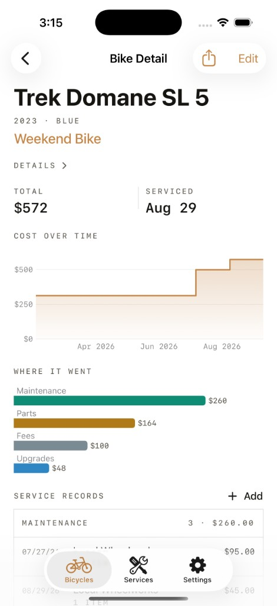
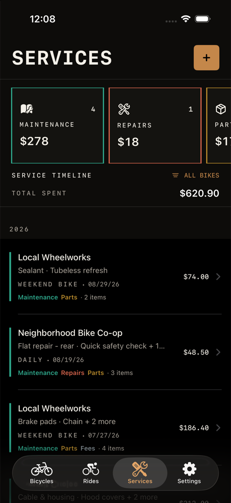

Follow every mile
Log rides with dates, names, duration, surface, and conditions.
A permanent record for every ride
Keep every bike in one garage, then move from its complete overview to a clear service history of work, parts, and costs.
BikeStable for iPhone is currently in development.


Built for the whole life of your bike
Log rides with dates, names, duration, surface, and conditions.
Keep work, parts, manufacturers, costs, and notes in a clear timeline.
Attach an invoice photo from your camera or photo library and keep a protected local copy with the service record.
Your service history stays on your device. No account or BikeStable cloud database is required.
On the route ahead
BikeStable will keep exploring ways to make ownership, maintenance, and documentation more useful while keeping your bike's history private and under your control.